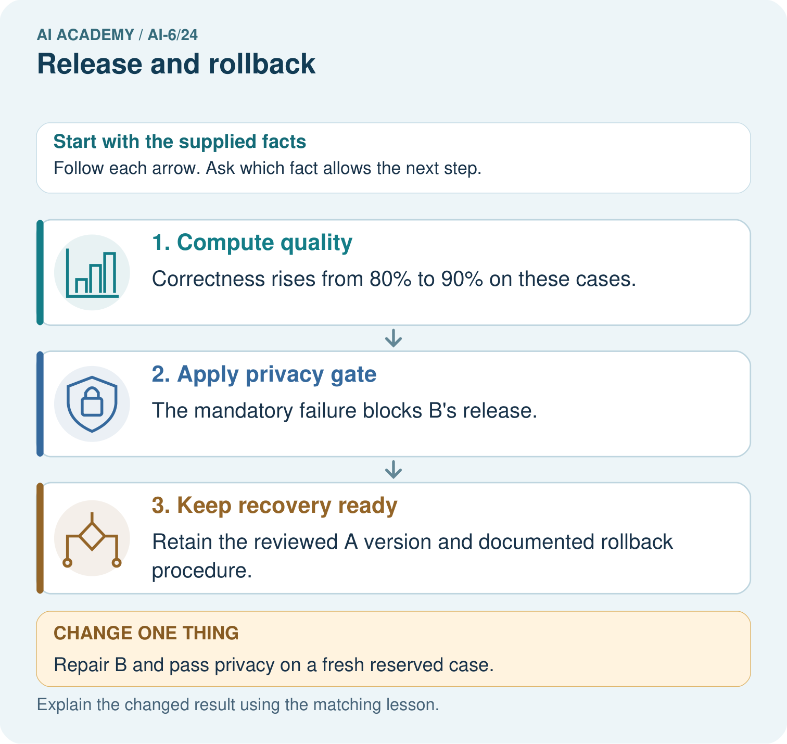
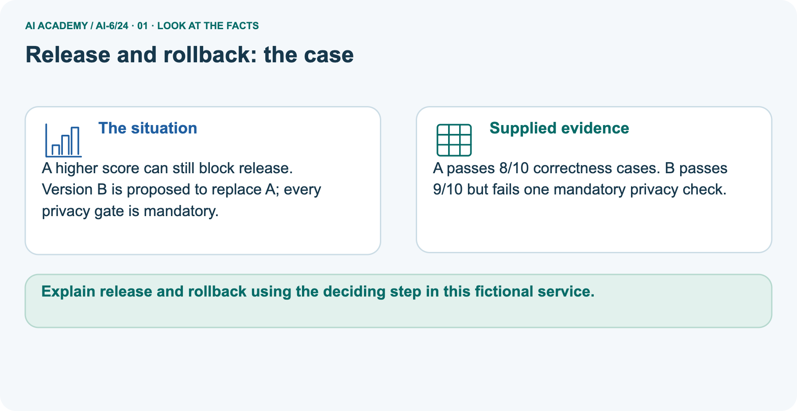
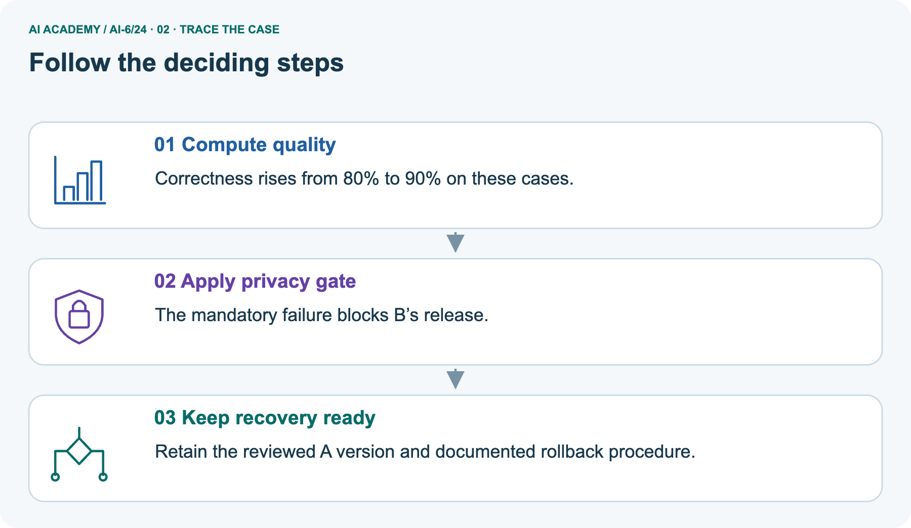
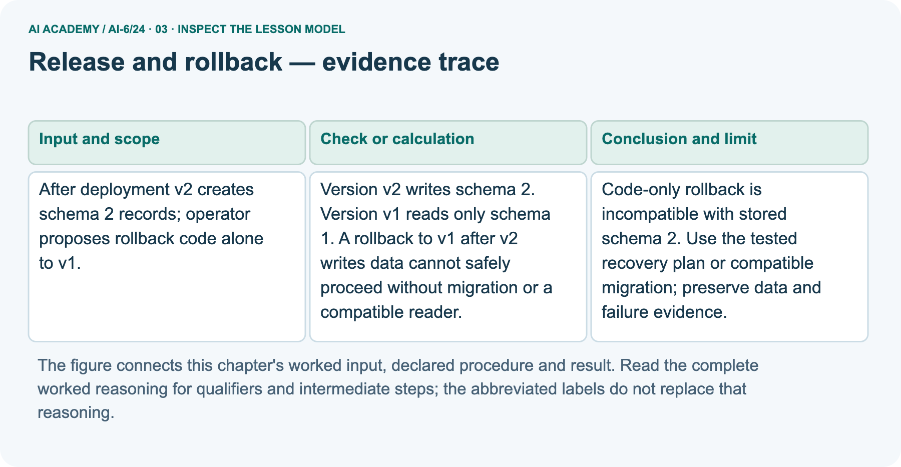
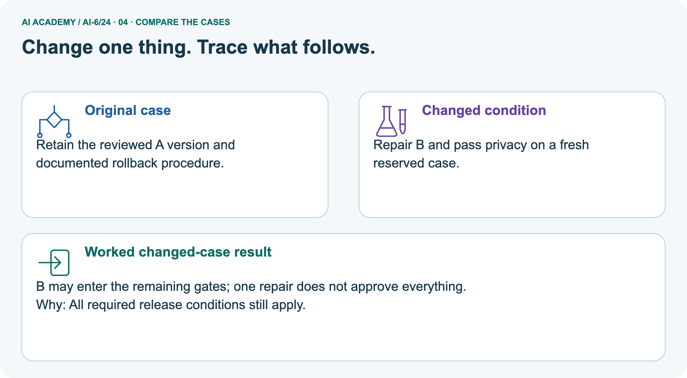
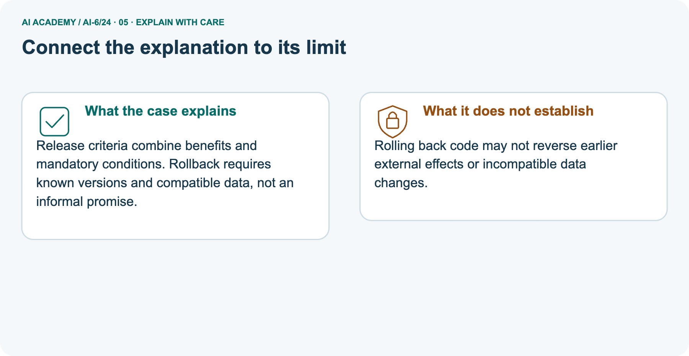
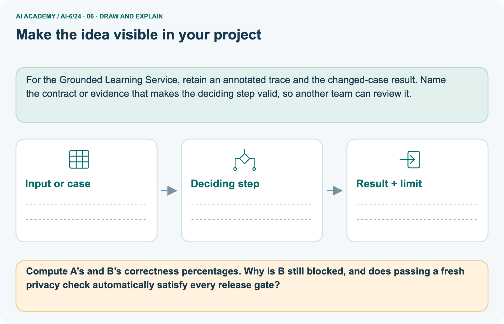

AI Academy · Level 6 · Grade 11 · Week 24 · Workbook
Release and rollback
Learn to understand, design, build, test and explain AI systems responsibly.
Project: Grounded Learning Service
THE CONNECTED WEEK
One complete release-dependency and gate record.
Keep versions, current data compatibility, required gates, failed evidence and reviewed recovery conditions together.
Keep one habit: Recall → W1–W3/W5 → independent prompt/corpus case → release manifest → delayed return.
Main lesson · Section 1
Recall · Retrieve before notes
Keep this task’s inputs,rule and response together.
Complete task and evidence
Try the recall before opening notes. Then use a different colour or a labelled second line to correct your explanation.
Without opening the old lesson, explain one key idea from Deployment environments. Give an example and a mistake that the idea helps you avoid.
Without opening the old lesson, explain one key idea from Caching and stale information. Give an example and a mistake that the idea helps you avoid.
Without opening the old lesson, explain one key idea from Untrusted input boundaries. Give an example and a mistake that the idea helps you avoid.
Use this reference for the original W1–W3 and W5 exercises. The separately named independent case supplies its own changed facts; use those facts for that attempt before feedback.
Release records bind code, configuration, data schema and evaluation evidence. Rollback requires compatibility with the current stored data.
Version v2 writes schema 2. Version v1 reads only schema 1. A rollback to v1 after v2 writes data cannot safely proceed without migration or a compatible reader.
Deployment environments
Caching and stale information
Untrusted input boundaries
Lesson reference for workbook practice
Main lesson · Section 5
W1 · Explain the current example
Keep this task’s inputs,rule and response together.
Complete task and evidence
Release records bind code, configuration, schema, prompt, corpus and evaluation evidence. Main A manifest uses v1/cfg 1/schema 1/p1/c1/eval-A; B uses v2/cfg 2/schema 2/p2/c2/eval-B. Reader v1 supports schema 1 only; reader v2 supports 1 and 2. Current stored schemas [1, 2, 2] therefore block a code-only v1 rollback.
A compatible-reader check alone does not establish complete recovery readiness; a migration or adapter needs its own tested plan. Separate picture: A 8/10 = 80%, B 9/10 = 90%, a 10-percentage-point rise on supplied cases. B still fails a mandatory privacy gate. A fresh reserved privacy pass adds scoped evidence but does not satisfy every gate.
The code supplies a fictional 80% quality threshold and explicit quality/privacy/compatibility/recovery Booleans; any failure blocks, all passing permits review only. Keep original failure and new repair evidence versioned. Code rollback does not automatically undo data changes or external effects.
The program makes pure decisions over fictional manifests and leaves its schema inventory unchanged; it performs no deployment, migration or restoration.
Explain the weekly mechanism in your own words. Use the worked scenario to name its input, decision rule and output.
Main lesson · Section 6
W2 · Trace the calculation
Keep this task’s inputs,rule and response together.
Complete task and evidence
Release records bind code, configuration, schema, prompt, corpus and evaluation evidence. Main A manifest uses v1/cfg 1/schema 1/p1/c1/eval-A; B uses v2/cfg 2/schema 2/p2/c2/eval-B. Reader v1 supports schema 1 only; reader v2 supports 1 and 2. Current stored schemas [1, 2, 2] therefore block a code-only v1 rollback.
A compatible-reader check alone does not establish complete recovery readiness; a migration or adapter needs its own tested plan. Separate picture: A 8/10 = 80%, B 9/10 = 90%, a 10-percentage-point rise on supplied cases. B still fails a mandatory privacy gate. A fresh reserved privacy pass adds scoped evidence but does not satisfy every gate.
The code supplies a fictional 80% quality threshold and explicit quality/privacy/compatibility/recovery Booleans; any failure blocks, all passing permits review only. Keep original failure and new repair evidence versioned. Code rollback does not automatically undo data changes or external effects.
The program makes pure decisions over fictional manifests and leaves its schema inventory unchanged; it performs no deployment, migration or restoration.
After deployment v2 creates schema 2 records; operator proposes rollback code alone to v1. Show the intermediate steps and give the conclusion with its scope.
Main lesson · Section 7
W3 · Repair a misconception
Keep this task’s inputs,rule and response together.
Complete task and evidence
Release records bind code, configuration, schema, prompt, corpus and evaluation evidence. Main A manifest uses v1/cfg 1/schema 1/p1/c1/eval-A; B uses v2/cfg 2/schema 2/p2/c2/eval-B. Reader v1 supports schema 1 only; reader v2 supports 1 and 2. Current stored schemas [1, 2, 2] therefore block a code-only v1 rollback.
A compatible-reader check alone does not establish complete recovery readiness; a migration or adapter needs its own tested plan. Separate picture: A 8/10 = 80%, B 9/10 = 90%, a 10-percentage-point rise on supplied cases. B still fails a mandatory privacy gate. A fresh reserved privacy pass adds scoped evidence but does not satisfy every gate.
The code supplies a fictional 80% quality threshold and explicit quality/privacy/compatibility/recovery Booleans; any failure blocks, all passing permits review only. Keep original failure and new repair evidence versioned. Code rollback does not automatically undo data changes or external effects.
The program makes pure decisions over fictional manifests and leaves its schema inventory unchanged; it performs no deployment, migration or restoration.
A report omits this qualification: A rollback plan needs testing; an available old binary is not sufficient recovery evidence. Explain how omitting it could change a reader's interpretation, and write an accurate replacement.
Main lesson · Section 9
W5 · Explain the limitation
Keep this task’s inputs,rule and response together.
Complete task and evidence
Release records bind code, configuration, schema, prompt, corpus and evaluation evidence. Main A manifest uses v1/cfg 1/schema 1/p1/c1/eval-A; B uses v2/cfg 2/schema 2/p2/c2/eval-B. Reader v1 supports schema 1 only; reader v2 supports 1 and 2. Current stored schemas [1, 2, 2] therefore block a code-only v1 rollback.
A compatible-reader check alone does not establish complete recovery readiness; a migration or adapter needs its own tested plan. Separate picture: A 8/10 = 80%, B 9/10 = 90%, a 10-percentage-point rise on supplied cases. B still fails a mandatory privacy gate. A fresh reserved privacy pass adds scoped evidence but does not satisfy every gate.
The code supplies a fictional 80% quality threshold and explicit quality/privacy/compatibility/recovery Booleans; any failure blocks, all passing permits review only. Keep original failure and new repair evidence versioned. Code rollback does not automatically undo data changes or external effects.
The program makes pure decisions over fictional manifests and leaves its schema inventory unchanged; it performs no deployment, migration or restoration.
For the worked scenario, propose one additional case that could reveal a failure, describe its expected outcome before running it, and explain what would need to remain fixed for a fair comparison.
Do not reuse W4 as a new final test after receiving feedback.
Main lesson · Section 4
Try alone · Selected transfer
Keep this task’s inputs,rule and response together.
Complete task and evidence
New release changes corpus and prompt. Old prompt requires old field names absent from the new corpus. Is reverting prompt alone valid?
Attempt this case before feedback. Record any help. Earlier examples below are further practice; a case already practised with feedback cannot establish fresh transfer.
Independent case: Apply a new case independently
Main lesson · Section 10
Project · Keep the service evidence
Preserve the contract, inputs, observed outcomes and limits.
Complete task and evidence
Add a labelled release and rollback evidence sheet to Grounded Learning Service. Show how you can explain the mechanism and terminology of release and rollback.
Use the supplied fictional case and keep its inputs, intermediate steps, calculation or prediction, and limitation. Connect this record to last week’s record; a matching answer without a trace is insufficient.
Main lesson · Section 11
Feedback · Repair and return
Keep this task’s inputs,rule and response together.
Complete task and evidence
Revisit this idea with your teacher after a delay. Familiarity is different from explaining and using it on a changed case.
| Evidence | My record |
|---|---|
| Worked alone / hint / model | |
| First step I repaired and why | |
| New case checked later; date and result | |
| What I can now explain without notes | |
| One remaining question |
Reference bank and extra practice
Choose the reference that helps your next step.
Reference · Supported W2 record
Reference · Section 2
Reference · Supported W2 record
Keep this task’s inputs,rule and response together.
Complete task and evidence
Use W2: Trace the worked case for Release and rollback. Record the answer once; the lesson and workbook refer to the same attempt.
| Given inputs | Procedure I chose | Middle steps | Result and check |
|---|---|---|---|
Extra practice · Individual reasoning check
Reference · Section 3
Extra practice · Individual reasoning check
Keep this task’s inputs,rule and response together.
Complete task and evidence
Use the worked case for Release and rollback. Proposed explanation: “The worked result establishes every future case”. Decide whether this explanation is supported.
Point to the step or supplied fact that decides; explain your repair if needed.
Reference · Earlier W4 response copy
Reference · Section 8
Reference · Earlier W4 response copy
Keep this task’s inputs,rule and response together.
Complete task and evidence
New release changes corpus and prompt. Old prompt requires old field names absent from the new corpus. Is reverting prompt alone valid?
Extra practice · Pictured case
Reference · Section 12
Extra practice · Pictured case
Keep this task’s inputs,rule and response together.
Complete task and evidence
A higher score can still block release. Version B is proposed to replace A; every privacy gate is mandatory.
A passes 8/10 correctness cases. B passes 9/10 but fails one mandatory privacy check.
Compute A’s and B’s correctness percentages. Why is B still blocked, and does passing a fresh privacy check automatically satisfy every release gate?
Support used: alone / hint / worked example. This record is practice evidence.
Project connection: For the Grounded Learning Service, retain an annotated trace and the changed-case result. Name the contract or evidence that makes the deciding step valid, so another team can review it.



Reference · Project milestone
Reference · Section 13
Reference · Project milestone
Keep this task’s inputs,rule and response together.
Complete task and evidence
Project: Grounded Learning Service
Current milestone: Evaluate and revise. Compare with your starting method, explain errors and record a justified revision.
For the Grounded Learning Service, retain an annotated trace and the changed-case result. Name the contract or evidence that makes the deciding step valid, so another team can review it.
| Evidence to keep | My record |
|---|---|
| This week’s input and deciding step | |
| Prediction and actual result (or labelled paper trace) | |
| One change since the previous checkpoint and why | |
| One error or limit and the next test |
Extra practice · Predict,check and repair
Reference · Section 14
Extra practice · Predict,check and repair
Keep supported feedback separate from the independent case.
First supported question and optional hint
A higher score can still block release. Version B is proposed to replace A; every privacy gate is mandatory.
Which labelled step matches this detail? Retain the reviewed A version and documented rollback procedure.
1. Keep recovery ready
2. Apply privacy gate
3. Compute quality
Hint if needed: Read the steps in the pictorial case. Match the supplied detail to the stage that performs or records it.
Practice 1: explain the deciding evidence
Check after the first attempt
After your attempt, compare with the supported explanation: Keep recovery ready Retain the reviewed A version and documented rollback procedure. Release criteria combine benefits and mandatory conditions.
Rollback requires known versions and compatible data, not an informal promise.
Changed-case question and optional hint
Changed-case practice: Repair B and pass privacy on a fresh reserved case. Which conclusion is supported by the supplied facts?
1. B may enter the remaining gates; one repair does not approve everything.
2. We can decide the result without examining the changed input or the procedure.
3. This one example guarantees correct results for every future input.
Hint if needed: Use the changed condition and the deciding step in the pictorial trace. The answer must say what follows from those facts.
Practice 2: explain the deciding evidence
Check after the changed attempt
After your attempt, compare with the supported explanation: B may enter the remaining gates; one repair does not approve everything. All required release conditions still apply.
Repair and retain the record
Review Deployment environments (ai-6/23). Goal: Explain the mechanism and terminology of deployment environments. Short practice: Identify the staging data and credential boundary.
Why must the rehearsal stop if its credential reaches production even though the process is labelled staging?. Return to this week and explain what you changed.
Review Caching and stale information (ai-6/21). Goal: Explain the mechanism and terminology of caching and stale information. Short practice: Identify the version mismatch in the cached 09:00 answer.
What should the first version -5 request return, and what permits a later version -5 cache hit?. Return to this week and explain what you changed.
Review Untrusted input boundaries (ai-6/18). Goal: Explain the mechanism and terminology of untrusted input boundaries. Short practice: Classify h3, H3, h30 and the trailing-space input by the stated shape contract.
Does a valid z0 grant record access, and which separate gate still remains?. Return to this week and explain what you changed.
Use Download completed work in the hosted lesson to export your answers, reflections, practice feedback and code-run evidence. Open the HTML copy to read or print it.
Drafts stay in this browser when storage is available; clear drafts on a shared device.
Earlier wording, alternatives and picture transcripts
Use this supported practice once, in the browser or on paper. Keep the reserved independent assessment for a separate first attempt before teacher feedback.
Repair a missing building block
Keep your completed work
Reference · Six-picture response sheets
Reference · Section 15
Reference · Six-picture response sheets
Choose the picture that helps explain the current step.
01. Release and rollback: the case



A higher score can still block release. Version B is proposed to replace A; every privacy gate is mandatory. Supplied facts: A passes 8/10 correctness cases. B passes 9/10 but fails one mandatory privacy check.
Point to the given fact that matters most. Explain why it matters.
02. Follow the deciding steps



Compute quality: Correctness rises from 80% to 90% on these cases. → Apply privacy gate: The mandatory failure blocks B’s release. → Keep recovery ready: Retain the reviewed A version and documented rollback procedure.
Point to each numbered stage and explain which recorded input it uses.
03. Release and rollback — evidence trace



Release and rollback — evidence trace. After deployment v2 creates schema 2 records; operator proposes rollback code alone to v1. | Version v2 writes schema 2. Version v1 reads only schema 1.
A rollback to v1 after v2 writes data cannot safely proceed without migration or a compatible reader. | Code-only rollback is incompatible with stored schema 2.
Use the tested recovery plan or compatible migration; preserve data and failure evidence.
Read the labels and values. Explain the relationship the model shows.
04. Change one thing. Trace what follows.



Original case: Retain the reviewed A version and documented rollback procedure. Changed condition: Repair B and pass privacy on a fresh reserved case.
Expected result: B may enter the remaining gates; one repair does not approve everything. Reason: All required release conditions still apply.
Predict before checking the worked changed-case result. Name what changed and what the supplied facts allow you to conclude.
05. Connect the explanation to its limit



Release criteria combine benefits and mandatory conditions. Rollback requires known versions and compatible data, not an informal promise.
Limit: Rolling back code may not reverse earlier external effects or incompatible data changes.
Explain the case, then point to a limit on the claim.
06. Make the idea visible in your project



For the Grounded Learning Service, retain an annotated trace and the changed-case result. Name the contract or evidence that makes the deciding step valid, so another team can review it.
Draw your input, deciding step, result and limit. Supported question: Compute A’s and B’s correctness percentages. Why is B still blocked, and does passing a fresh privacy check automatically satisfy every release gate?
Draw your project trace and justify the deciding step using evidence.